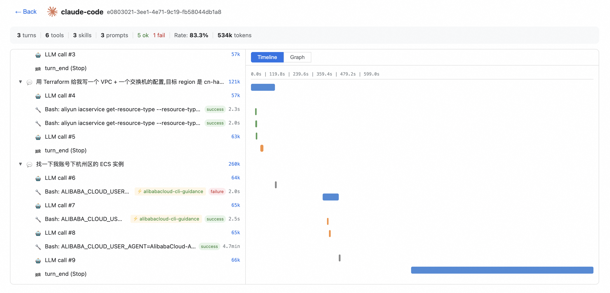
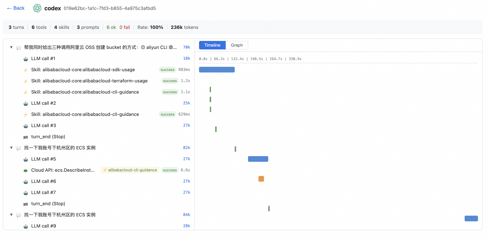
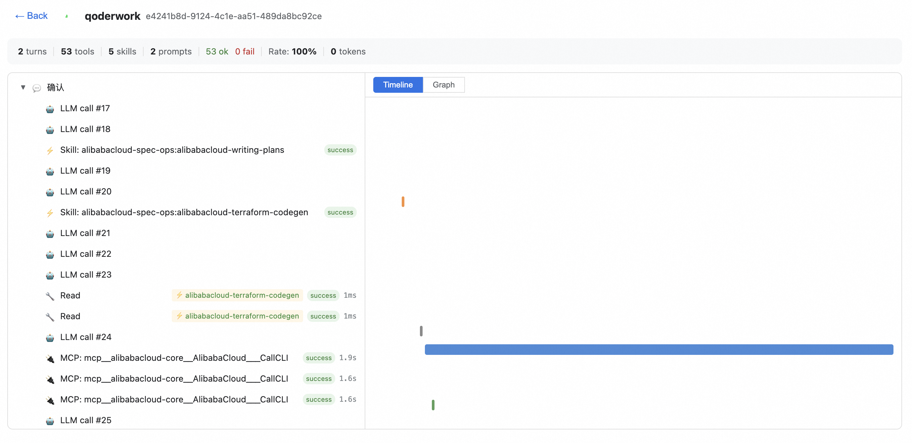
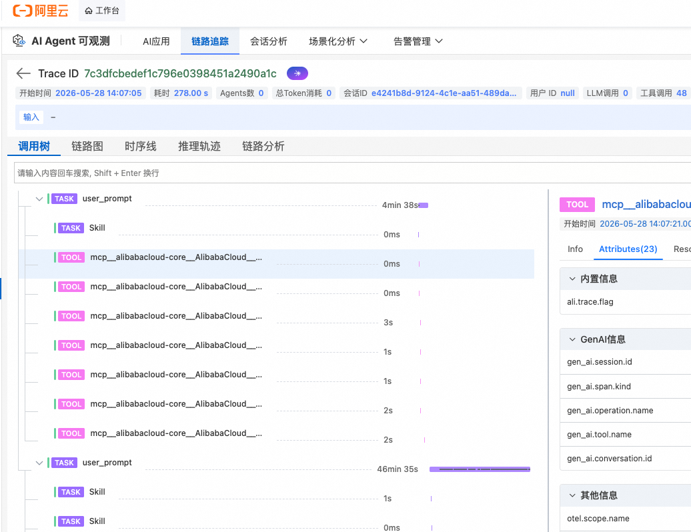

每个 turn 一棵 span 树 — LLM 思考 → 工具选择 → 阿里云 OpenAPI 全链路
出错时展开错误堆栈,RequestId 定位阿里云控制台 / ActionTrail
每会话 turn / tool / skill / 成功率 / token,本地直查 P95 与错误率
操作五元组留痕:RAM 身份 · 时间戳 · OpenAPI Action · 资源 ID · RequestId
AK / SK / PII 自动脱敏 · 可上报至 SLS / ARMS / 客户自建数仓